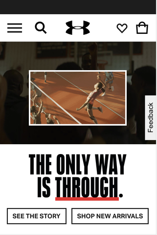
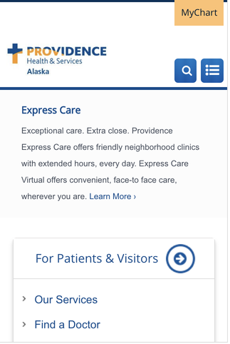

Visual Hierarchy
deaniebabies.com

This website is an example of visual hierarchy through the use of text size and color. The first thing noticed is the red color of the logo. The size of the word "exploration" then draws the viewers attention, then your eye moves down the blue "learn more" button. The eye then comes back up to read "Information to encourage exploration".
Repetition
Under Armour
This website shows repetition through their use of typography and color. They use the same font, just different sizes on the home page. They also use the color black throughout the page, and it ties the page together. Repetition is also used in the design of the buttons.
Clean Design and White Space
Providence Alaska
This website uses Clean Design and white space to enhance their page. They don't clutter the page with a lot of different colors and elements. They have everything spaced out nicely and use white space to emphasize the important elements.